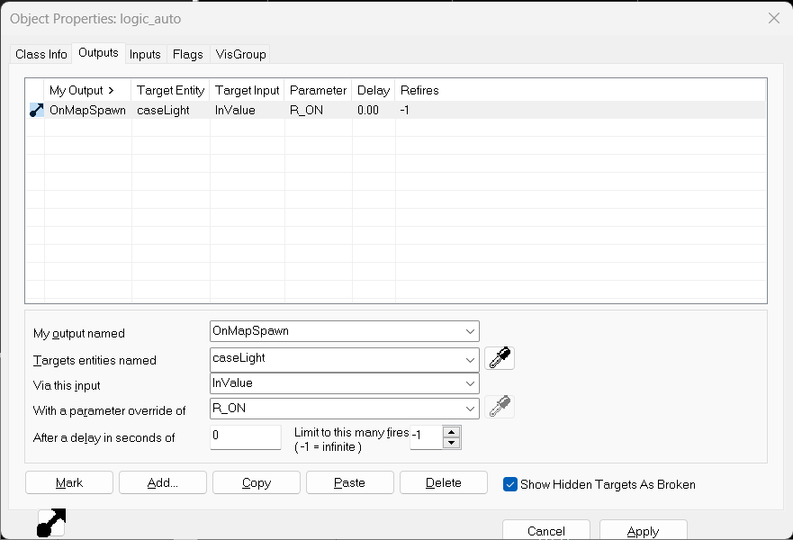
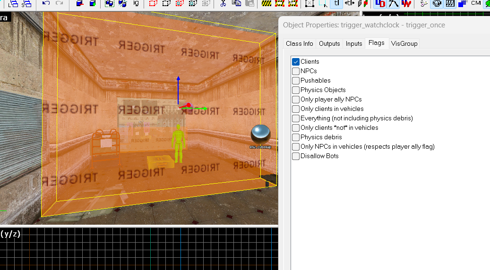
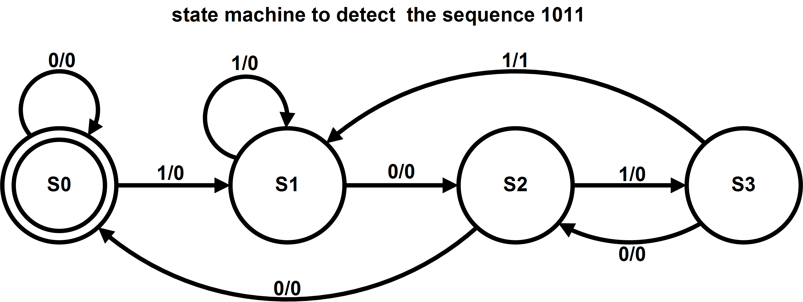
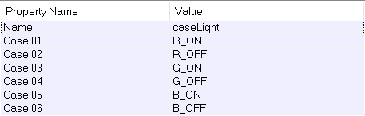
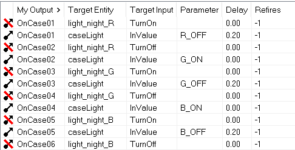

Trigger et algorithme dans hammer
https://developer.valvesoftware.com/wiki/Category:IO_System
Dans Hammer nous pouvons activer des scripts (Dialogue, apparition d'ennemi, etc...), cela peut se faire en marchant à un endroit précis où au chargement de la map.
Activer un script
Avec l'entité logic_auto nous pouvons activer un script au démarage de la map.


- Il faut mettre OnMapSpawn dans les paramètres.
- Mettre le nom de l'entité en argument.
- Qu'elle type d'entrée va recevoir l'entité.
- Une autre valeur en argument d'entrée.
Pour placer un trigger crée un block puis le transformer en entité (CTRL + T).
Trigger_once qui s'active une fois ou Trigger_multiple qui peut s'activer plusieurs fois.

Assurez vous que le Flags Clients est activer.
Machine à état
Une machine à état est un principe séquentielle, où l'on va donner un état qui va changer en fonction de la valeur qui recois en entré.

Metter l'entité logic_case.

Exemple avec un système de lumière qui alume une lumière rouge puis vert et bleue.
 